Preparamos los archivos de la Web que contendrá el servidor:
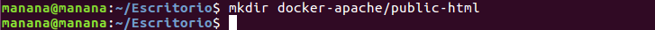 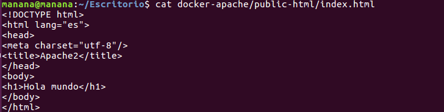Creamos el fichero "Dockerfile" con este contenido:
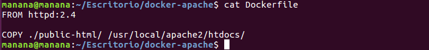Generamos la imagen que nos servirá de plantilla para nuestros contenedores:
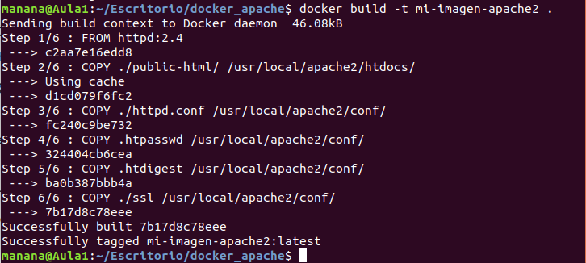Ahora podemos crear un contenedor "vivo":
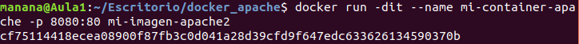Rehacer la imagen (cada vez que hagamos cambios):
Parar el contenedor (para poder borrarlo):
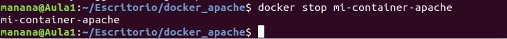Borrar el contenedor:
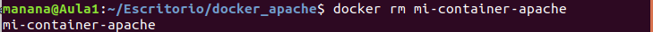Copiar el archivo de configuración del contenedor a la máquina física:
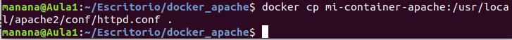Modificamos el Dockerfile:
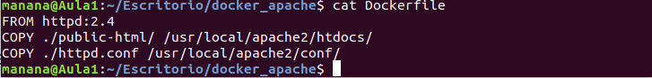En el directorio del Dockerfile ejecutamos lo siguiente:
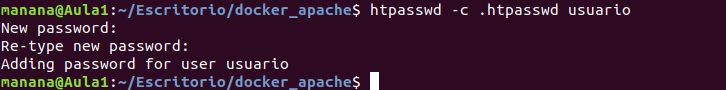En caso de no tenerlo instalado:
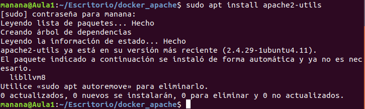Modificamos el Dockerfile para que quede así:
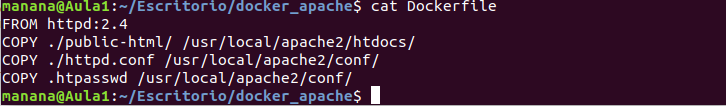Creamos el archivo de contraseñas:
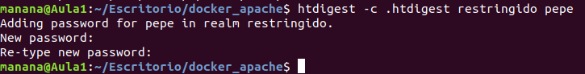Modificamos el Dokcerfile:
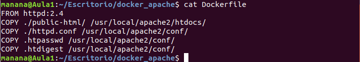Modifcamos el httpd.conf añadiendo al final:
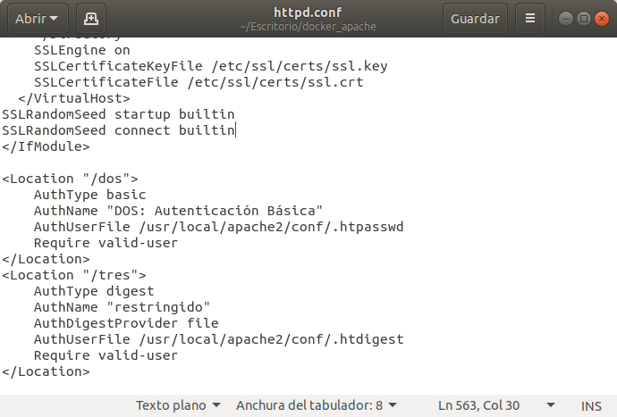Modificamos el script de generación de imágenes:
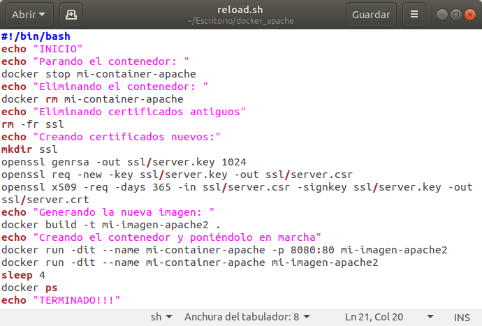Modificamos el Dockerfile:
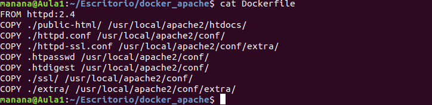Modificamos el httpd.conf:
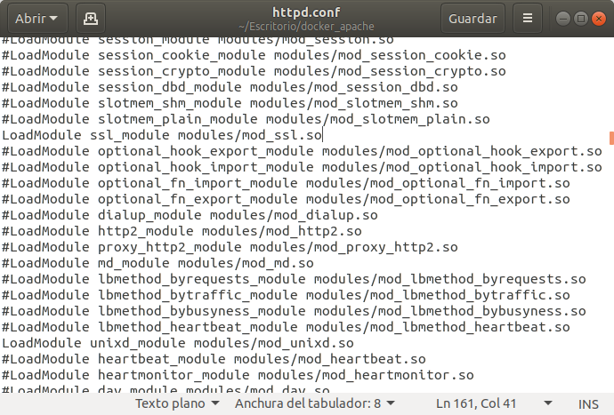 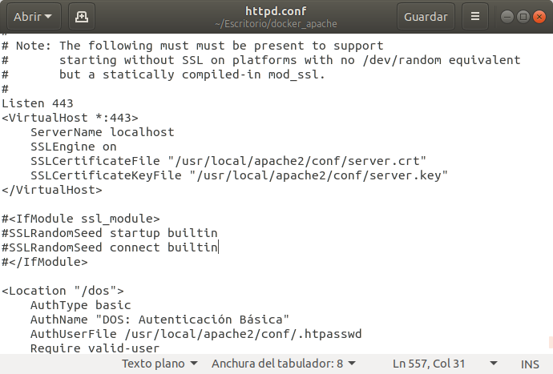Ejecutamos el script "reload":
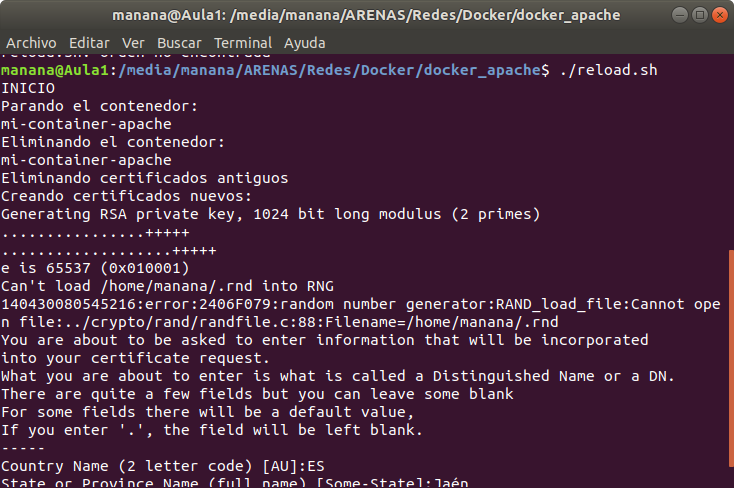